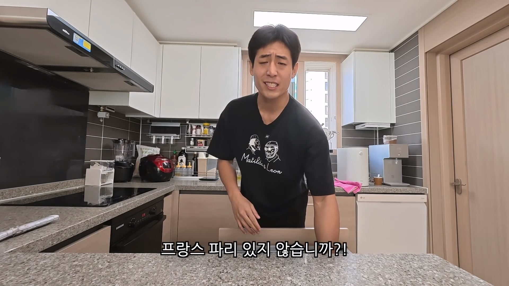
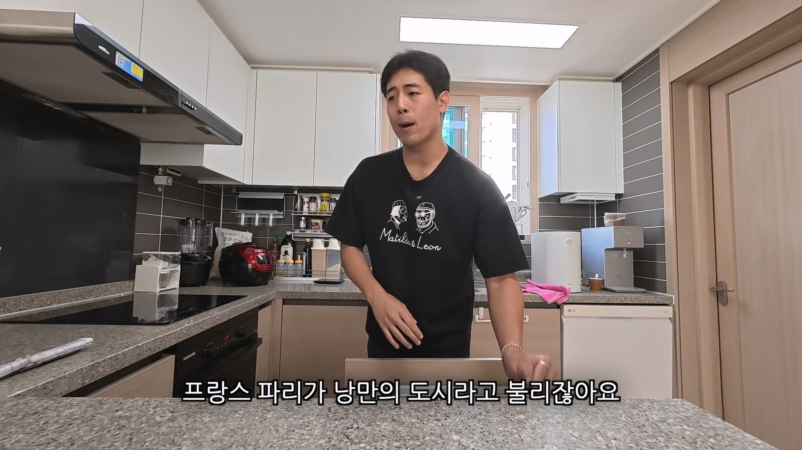
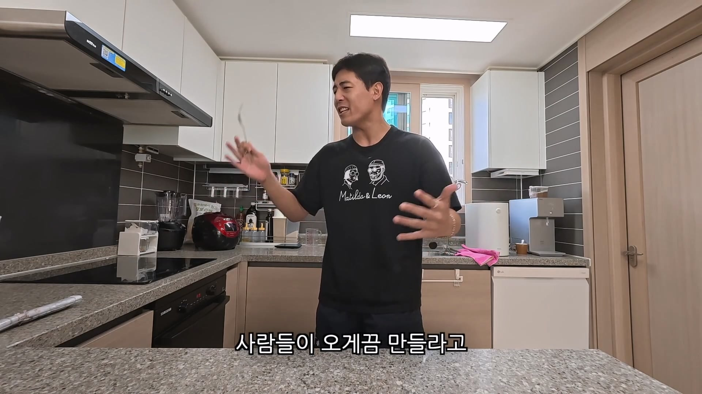
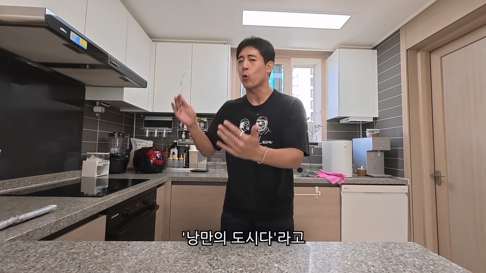
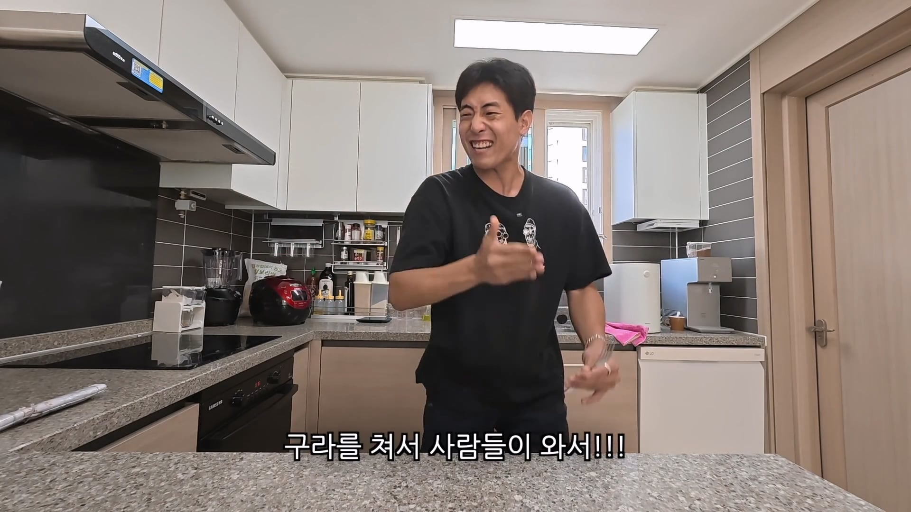

아내가 프랑스사람 ㅋㅋㅋㅋ





아내가 프랑스사람 ㅋㅋㅋㅋ
더 큰 쥐, 더 큰 X... ㅋㅋㅋㅋ
더 큰 보쥐?
달라란에 오신것을 환영합니다
달라란이 낭만이지ㅋㅋ
닌자 거북
지하철 찌링내
오 샹젤리제~
이 노래 지분이 80퍼임. 여수 밤바다 같은거지
그리고 에펠탑빨
파리가서 젤기억에 남는건 결국 야간에 바토무슈타면서 에펠탑 본거
하지만 그게 낭만인걸 ㅋㅋ
맞긴해.. 카미노 가기 전에 파리 관광 며칠 했는데 난민 문제 있기 전이었는데도 뭔가 묘하게 몬가몬가 싶더라
그래도 카미노는 기가 막혔음
쥐새끼랑 개똥이 문제라는거 한국인 일본인만 그럴듯 ㅋㅋㅋㅋㅋ 유럽 동남아 북미 가면 길거리에 쥐새끼랑 개똥 기본임 ㅋㅋㅋ오히려 한국이랑 일본이 이상하게 쥐새끼랑 개똥 찾기 힘든거임.
살다보면 그냥 그러려니함. 그냥 반려견 살기 좋은나라다~ 싶음
동남아 북미도 깨끗하던데 유럽은 안가봐서머름
동남아, 캐나다 쥐 많이 돌아다님
밴쿠버는 오후에도 돌아다님
개똥은 그렇다치는데 쥐새끼는 문제가 시발 심각한거아니냐 ㅋㅋㅋㅋ
한번은 파리 에펠탑 앞에 공원에서 돗자리펴고 피자먹은적 있었는데
해 뉘엿뉘엿 저무는 7시 시간대쯤에 공원 풀숲 가운데서
거뭇한 구름떼같은게 스스슥 지나가는거임
후카(*물담배) 빨던 현지인 남자애들이 발로 막 차고 그러길래
저게 뭐지? 싶었는데 쥐들이 떼지어 다니는 거였음
파리역 처음 도착했을때 떨 피우는걸 보던가,
파리역 근처에 노상방뇨, 오줌자국 있는거 보면서
대체 이 나라에 어떤 낭만을 기대하는지 모르겠음 ㅋㅋ
실제로 Paris Syndrome 으로 죽는 사람들도 있는 정도니.. 브랜딩은 성공한거지.....
어디에 초점을 맞추냐에 따라 다른거같음
도시에 낭만이 있다 생각하는 사람은 실망하고
문화에 낭만이 있다 생각하면 얼추 맞을듯
ㄴㄴ 캐나다, 미국, 동남아보면 저녁에 쥐들 많이 돌아다님. 우리나라에선 문제인데 걔들한텐 별로 안심각한가봄
사람새끼똥도
프랑스가 잘 나갈 때부터의 헤리티지같은 거니까
1482년은 낭만이였지
프라하도 낭만 브랜딩 좀 하지않았냐?
멀리서봐야 낭만인데
그정도 낭만은 이제 전세계 주요도시에 다 있지
바겟트랑 김치 갠가? 갑자기 훅 늙은 느낌이고
파리가 낭만의 도시가 된건
브랜딩이 아니라 몸으로 느낀 체험이었음
1944년 여름 파리에 미국 청년들이
어마어마하게 들어감
그리고 그 청년들이 다들 몇번씩
파리지엔느(파리 여자) 들이랑 떡을 침
독일놈들한테 굴종한 찐따같은 자국 남자들에 비해
해방군이었던 미군은 그 자체로 멋있는데
이미 20여년전부터 냉장고를 사용하고
다른나라가 어려우면 순무 먹을때
미국인은 미트로프 먹었던 것에서 보듯
영양상태가 압도적으로 좋았기에
미군은 키도 크고 힘도 세고...
파리지엔느들이 앞다투어 다리를 벌릴만했음
미군들 이제 20살의 미국인 청년들은
남자들 틈에서 꾸리꾸리한 땀냄새만 맡다가
오랜만에 분냄새도 맡으니 눈이 도는데
여기에 파리여자들은 고국의 여자들과 달랐음
뒷물을 하는 문화 자체가 없어 평생 뒷물을 안하니
항상 보징어 냄새 작렬하던 그 당시 미국 여자들과 달리,
파리지엔느들은 비데에 앉아 뒷물하는게
하루 일과의 마감이고 섹스전에 당연히 해야하는
준비과정인데다 향수의 나라답게 향수도 많이 썼음
그래서 파리지엔느 들과의 하룻밤은 환상적이었던 거지
(비데는 원래 뒷물용으로 쓰건 여자 전용 기구임.
이걸 똥 싸고 밑 닦는 것으로 전용해서 남녀공용으로
만든건 80년대 일본회사 TOTO)
낭만의 파리는 참전용사들의 체험으로 만들어진 것이었음
이런건 어디서 알아오는거에요??
이런걸 중시하는 학문이 있음
문화인류학
ㅅㅂ 이거 진짜에여?
베르사유 궁전 화려하다고 느꼈는데 바티칸 성당 갔다와보니까 진짜 좆도 아님
맞긴해 포르투랑 헝가리가 더 낭만있더라
근데 이미 18세기때부터 시작된 유서깊은 브렌딩이긴 하지
요즘이니까 쥐똥이니 개똥이니 하는거지
김치와 바게뜨 유튜브 남자 맞나?
와이프랑 원룸에 살면서 같이 제지 공장 월급 모아다가 게스트 하우스 하는게 꿈이라고 했던 것 같은데
달라진 느낌이네
요새는 하수도 시설 개편하고 좀 나아졌다고는 하던데
에전에는 진짜 냄새나고 더러웠다던데
진짜 낭만의 도기는 뉴욕이지